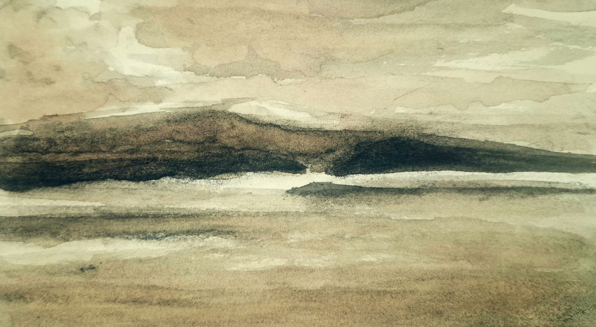

Augusto Tomba
[ palavra · palavra · palavra ]
substituir pela imagem/vídeo final ]
Augusto Tomba
[ Texto provisório — resumo de 3 a 4 frases sobre a trajetória do artista, formação, influências e atuação como escritor e pintor. Conteúdo final a ser fornecido. ]
Antes do traço ou da palavra, a dissolução.
Esboçar o rio exige a humildade da pele molhada.Navego entre a literatura e as artes pictóricas. Bebi de fontes diversas e distantes, da iconografia bizantina à ilustração científica, da caligrafia oriental ao surrealismo.
Na escrita, cultivo um realismo do absurdo.
Dessa síntese, busco equilíbrio na memória e entendimento no improvável.
[ Título do livro ]
[ Breve descrição provisória da obra literária — uma ou duas frases que despertem interesse, com convite para conhecer o livro na íntegra. ]
conhecer o livro →Coleções
Primitivo Onipresente
Esta coleção reúne desenhos a carvão sobre papel de aquarela. O contraste entre claro e escuro, herdado dos Antigos Mestres da arte ocidental, encontra aqui o silêncio da Arte Oriental — presente na atenção aos temas que remetem ao tempo dos ancestrais.
Há objetos que não envelhecem. Persistem sobre a mesa, como se o tempo fosse apenas uma luz que muda de ângulo.
O contraste entre claro e escuro, herdado dos Antigos Mestres, encontra aqui o silêncio dos temas: o figo partido, o anis-estrelado, o gravatá, a pinha já aberta, as flores miúdas sobre a madeira antiga. Em algumas obras, o papel já traz uma primeira pele — laca indiana, escura e silenciosa, anterior ao gesto.
A mesa que sustenta cada composição é bicentenária. Carrega, ela também, o peso do que não foi dito; os temas, a delicadeza do que teima em existir.
O primitivo não é o que ficou para trás. É o que permanece sob a superfície das coisas ordinárias — visível a quem se detém.
[ Próxima coleção ]
[ Título, descrição e obras a definir. ]